1.1 草图：在平面上画轮廓
几乎所有立体形状都是从一张“草图”开始的：先在一个平面上画出轮廓，再让它长出厚度。这一页认识草图环境、常用的画图工具、尺寸和约束——尤其是“约束”，它决定了你的图是乖乖听话还是一拖就变形。
草图是什么#
草图就是画在某一个平面上的二维线条，像在一张透明的纸上画图。它本身没有厚度，只是“轮廓”：后面用拉伸、旋转等命令，才把它变成立体（1.2）。
草图里有两样东西特别重要：
- 尺寸：规定“多长、多大”。比如矩形宽 40 mm。
- 约束：规定“几何关系”。比如这条线保持水平、这两条线一样长、这个点在原点上。
第 1 步：创建草图，选一个平面#
- 「实体」选项卡 →「创建」组最左边的「创建草图」。
- 画布上会出现三个橙色的方块：这是三个原点平面。鼠标移上去哪个，哪个就高亮。
- 点水平的那个（XY 平面，也就是“地面”）。
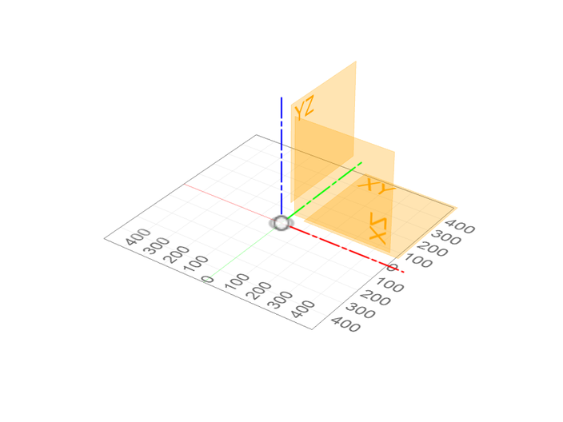
草图环境#
选好平面后，视角自动转成正对这个平面，界面进入草图模式：
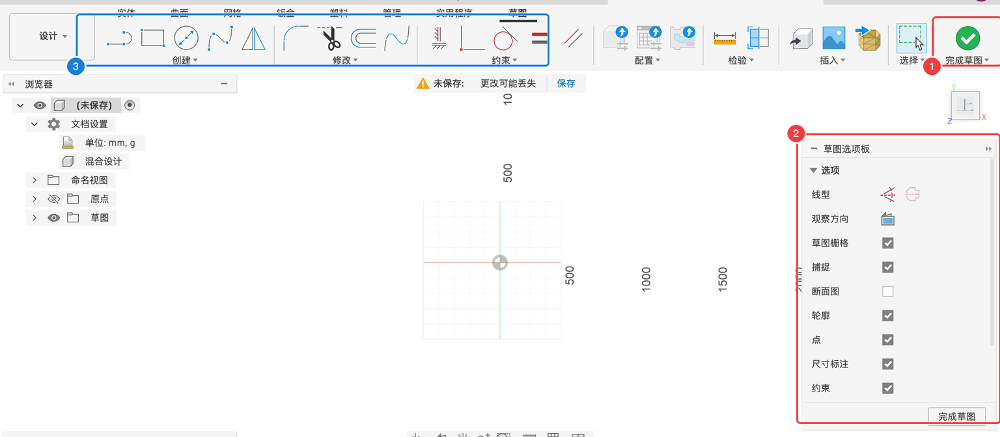
右边的草图选项板控制草图的显示和辅助功能：
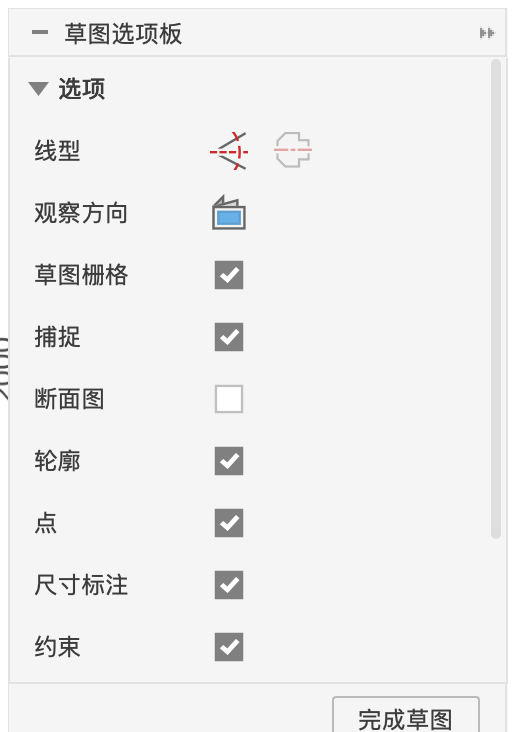
| 选项 | 含义 | 建议 |
|---|---|---|
| 线型 | 两个图标：把选中的线变成构造线（虚线，只用来辅助定位，不会变成实体）/ 中心线 | 需要时用 |
| 观察方向 | 一键把视角转回正对草图 | 转乱了就点它 |
| 草图栅格 | 显示背景格子 | 勾选 |
| 捕捉 | 画图时鼠标自动吸附到格子上 | 按习惯，新手可以关掉，靠尺寸定大小 |
| 断面图 | 画草图时把挡住草图平面的实体“切开”显示 | 在零件内部画草图时打开 |
| 轮廓 | 封闭区域显示成浅蓝色 | 勾选 |
| 点 / 尺寸标注 / 约束 | 是否显示草图里的点、尺寸、约束小图标 | 勾选 |
画完之后点右上角的「完成草图」退出草图模式。
画图工具#
草图模式下「创建 ▾」里是全部画图工具，带 ▸ 的还有子菜单：
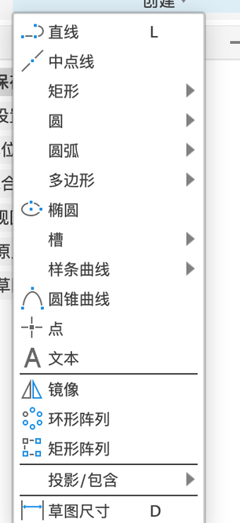
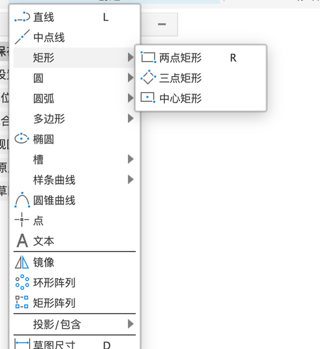
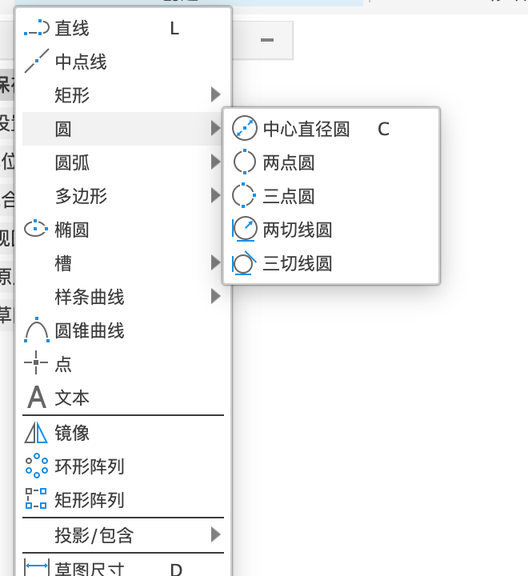
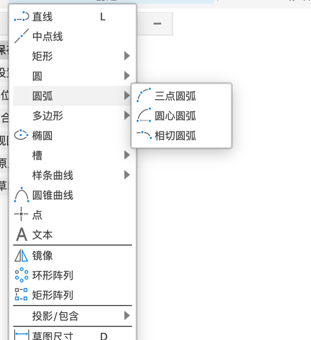
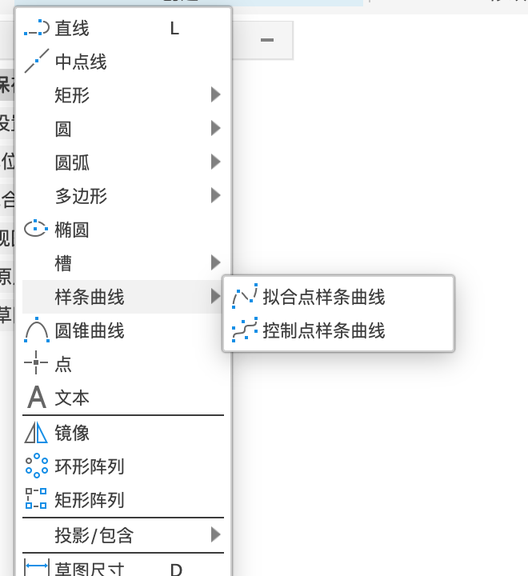
| 工具 | 怎么用 |
|---|---|
| 直线 L | 点一下起点，再点下一个点，连续画折线；按 esc 结束。按住鼠标拖可以直接接出一段相切的圆弧 |
| 中点线 | 先点中点，再往一边拉，两边对称 |
| 多边形 ▸ | 外接 / 内接多边形（按圆来定大小）、边多边形（按边长定大小），可以设边数。案例里旋钮的六角螺母槽用它 |
| 椭圆、槽 ▸、圆锥曲线 | 槽是“跑道形”，常用来做长条孔；子菜单里有中心到中心、中心点、三点圆弧、圆心圆弧等画法（第 4 章） |
| 点 | 放一个点，常用来给“孔”定位 |
| 文本 | 写字（见下文） |
| 镜像 / 环形阵列 / 矩形阵列 | 在草图里复制线条（见下文） |
| 投影 / 包含 ▸ | 把已有实体的边“抄”到当前草图里（见下文） |
| 草图尺寸 D | 标尺寸 |
第 2 步：画一个中心矩形#
- 「创建 → 矩形 ▸ → 中心矩形」。（R 是“两点矩形”的快捷键，不是中心矩形。）
- 点一下原点作为中心（鼠标靠近原点会自动吸附上去）。
- 往外拖，屏幕上会跟着显示宽、高的输入框。
- 再点一下确定大小。按 esc 结束命令。
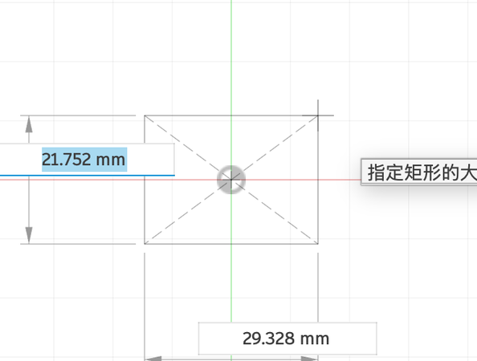
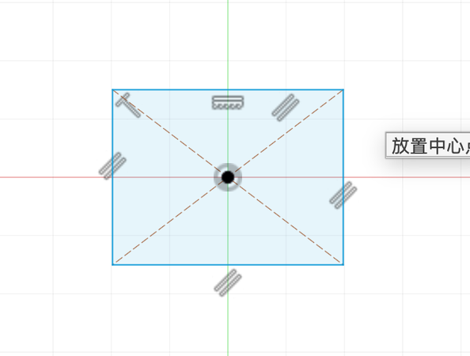
第 3 步：标尺寸#
- 「创建 → 草图尺寸」（快捷键 D）。
- 点矩形的上边，往上移一点再点一下，放下尺寸。
- 弹出的输入框里输入
40，按 return。 - 同样点右边，输入
30。
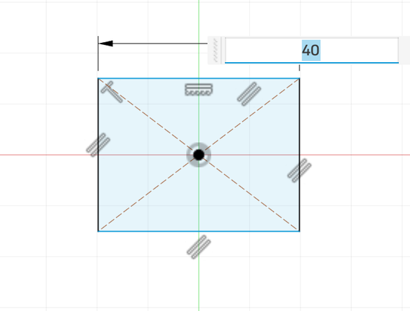
尺寸改了，线条会跟着变长变短。点两个点可以标两点距离；点一个圆可以标直径；点两条不平行的线可以标角度。
约束：让图形“听话”#
只标了宽和高，矩形还会不会乱动？会。它可能整体滑走（位置没定），也可能被拖歪。约束就是给图形加上一条条“规矩”：
| 约束 | 意思 | 约束 | 意思 |
|---|---|---|---|
| 水平/垂直 | 线保持横平竖直；对两个点用，就是让它们左右或上下对齐 | 平行 / 垂直 | 两条线平行 / 成直角 |
| 重合 | 点落在另一个点或线上 | 共线 | 两条线在同一条直线上 |
| 同心 | 两个圆（弧）圆心重合 | 中点 | 点落在线的正中间 |
| 相切 | 线和圆弧光滑地接上 | 曲率 | 比相切更光滑的连接（曲面造型用） |
| 相等 | 两条线一样长 / 两个圆一样大 | 对称 | 两个点关于一条线对称 |
| 固定 / 取消固定 | 把点或线钉死在当前位置 |
很多约束是画图时自动加上的：比如画矩形时会自动加“水平”“垂直”“平行”，线头吸附到点上会自动加“重合”。画布上线旁边的小图标就是约束标记，点一下图标选中它，按 delete 就删掉了。
自己加一条约束：
- 在工具栏「约束」组里点要加的约束（图标上停一下会显示名字，比如「相等」）。
- 依次点要“管”的对象。比如「相等」就点两条线；「重合」就先点一个点，再点另一个点或一条线；「水平 / 竖直」点一条线就行。
- 加完后图形会马上变，线旁边多出一个约束小图标。按 esc 退出。
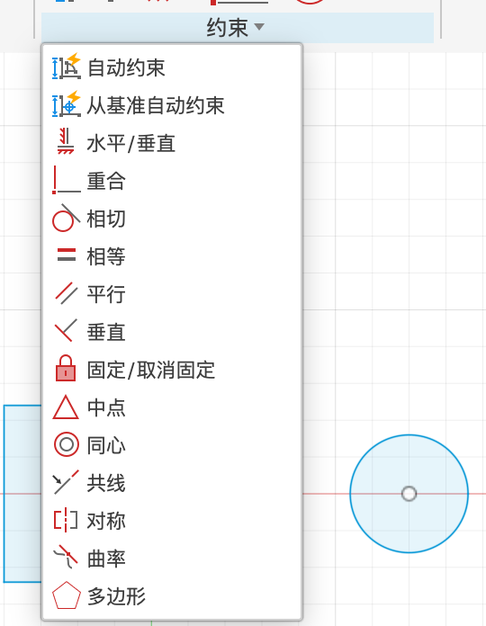
🧪 实验：自由度和完全约束#
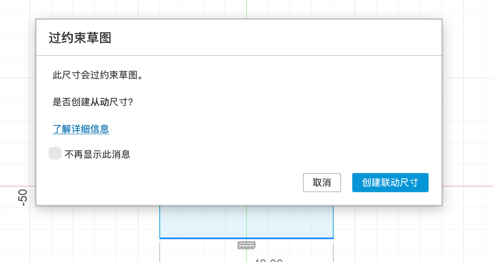
修改和复制线条#
草图模式下「修改 ▾」里有圆角、修剪（T，点一下删掉多出来的一段线）、延伸、打断、偏移（O）等。下面是几个常用的对话框：
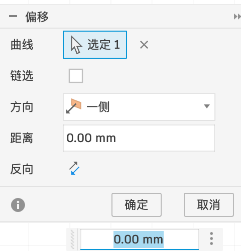
| 选项 | 含义 |
|---|---|
| 曲线 | 要偏移的线（这里选了矩形的 4 条边） |
| 链选 | 勾选后，点一条线会自动选上和它首尾相连的一整圈 |
| 方向 | 往一侧，或者两侧都偏移 |
| 距离 | 偏移多远；负数往反方向 |
| 反向 | 换一边 |
常用来画“壁厚”：外轮廓往里偏移 2 mm，就是一圈 2 mm 厚的墙。
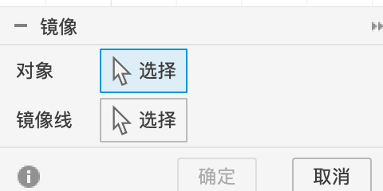
左右对称的图形只画一半，另一半镜像出来。镜像线一般用一条构造线或者坐标轴。
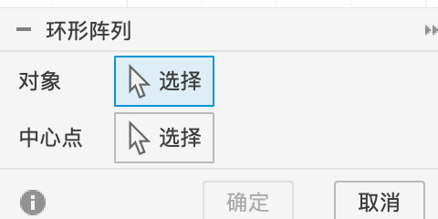
绕一个点复制一圈，比如法兰上一圈 6 个螺丝孔。
排成横竖整齐的几行几列，比如散热孔。
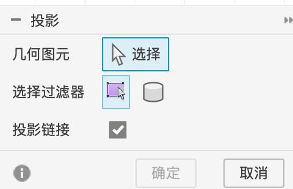
| 选项 | 含义 |
|---|---|
| 几何图元 | 要“抄”过来的边、面或草图线 |
| 选择过滤器 | 只选边 / 只选整个实体 |
| 投影链接 | 勾选时，抄过来的线和原来的边保持关联：原零件改了，这里自动跟着改 |
画第二个零件时要和第一个零件对齐，就用投影把第一个零件的边抄过来。案例 P4 的靠背就是这样画的。
写字#
「创建 → 文本」：先在画布上点两下拉出一个文本框，再在对话框里输入文字。第一次使用会弹出一个“参数化文本”说明（文字也能存成参数），点确定即可。
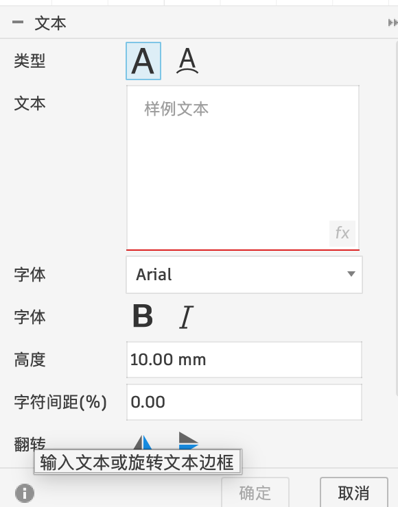
| 选项 | 含义 | 注意 |
|---|---|---|
| 类型 | 两个图标：框内文本 / 沿路径文本（字沿着一条曲线排） | 一般用第一个 |
| 文本 | 要写的字，可以多行 | — |
| 字体 | 系统里装的字体 | 中文要选中文字体（Mac 选 PingFang SC 等），否则可能显示成方块 |
| 粗体 / 斜体 | B / I | — |
| 高度 | 字的高度 | 3D 打印的字建议 ≥ 5 mm，太小印不清 |
| 字符间距 | 字和字之间的距离（百分比） | — |
| 翻转 | 水平 / 竖直翻转文字 | 刻在底面的字可能需要翻转 |
完成草图，看看“轮廓”#
点「完成草图」退出。草图里所有封闭的区域都会变成浅蓝色，每一块叫一个轮廓。下一节的拉伸、旋转，选的就是这些轮廓。
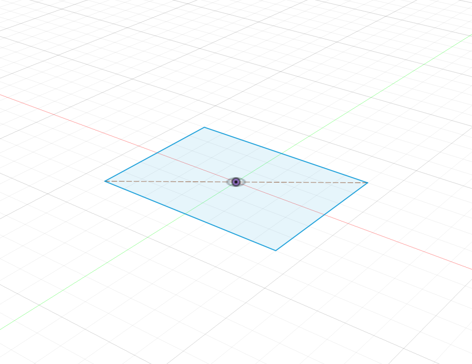
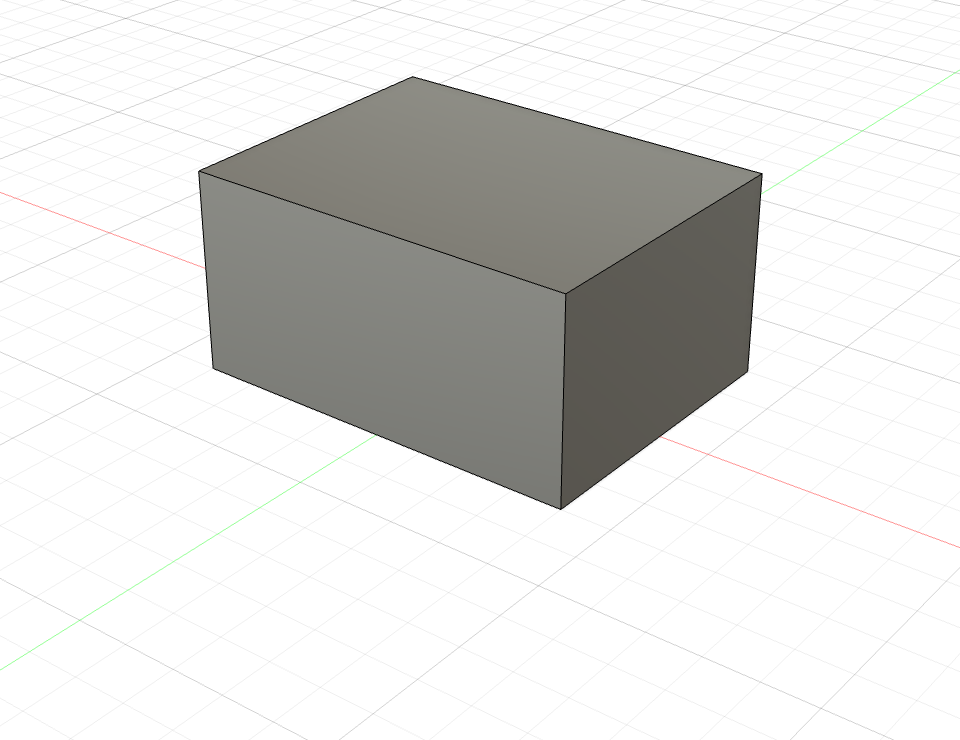
- 我会创建草图并选择 XY 平面
- 我会画中心矩形，并用 D 标上尺寸
- 我知道蓝线和黑线的区别
- 我知道只有浅蓝色的封闭区域才能拉伸